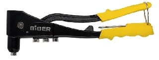

Заклепочник усиленный ручной BIBER 255 мм
Цена от
730,00 ₽
Размерный ряд
2,4 мм, 3,2 мм, 4,0 мм, 4,8 мм.
Инструменты » Заклепочники ручные механические » Заклепочник усиленный ручной литой BIBER 255 мм (2.4-4.8)
Варианты и размеры (1)
| Наименование | Размер | Длина, мм | Материал | Покрытие | Цена |
|---|---|---|---|---|---|
| Заклепочник усиленный ручной BIBER 255 мм | 730,00 ₽ |